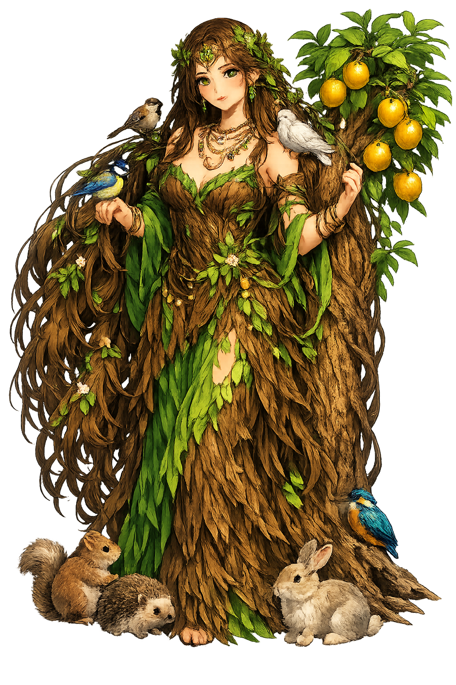
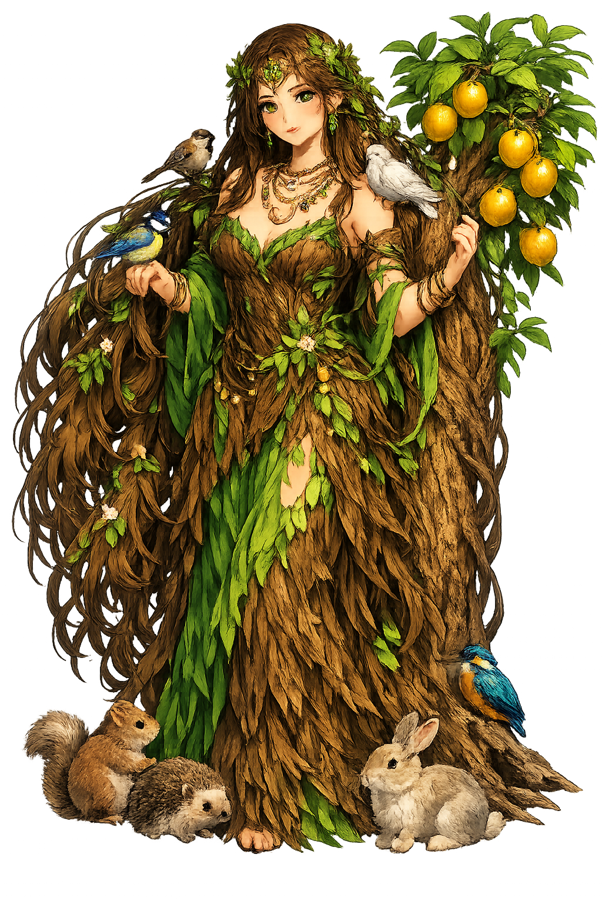

The Authentic Orthography
Sea, Mother Goddess · She Who Treads the Sea

Unicode restoration and ASCII comparison
𐤀𐤔𐤓𐤕
The name in its original Phoenician form. Ašeratu (𐤀𐤔𐤓𐤕) is attested in the source tradition — “She who treads on the sea”. Its original diacritics and script distinctions carry the full phonetic and orthographic weight of the source tradition.
aseratu
Reduced to plain aseratu, the name loses everything that made it specific: original diacritics and script distinctions. What remains is an ASCII string that machines can parse but that no longer speaks with its original voice.
Ašeratu
The Unicode restoration recovers what ASCII flattened. Ašeratu restores original diacritics and script distinctions, returning the name to its original written dignity. The domain encodes to Punycode, but the browser displays the truth.
Ašeratu.com → xn--aeratu-bkb.com
The non-ASCII characters in Ašeratu are encoded while the ASCII remains visible. To the DNS, it is Punycode. To humanity, it is Ašeratu.
How Ašeratu travels from ancient script to the modern URL
Phoenician ʾšrt, parallel to Ugaritic Athiratu; the name is connected with a root meaning “to stride, to tread" and with the sacred grove/pole.
Sea, Mother Goddess
The Unicode restoration Ašeratu supplies registrable vowel diacritics; the Phoenician consonantal form is not registrable in .com.
Owned, ideal, and ASCII forms of Ašeratu
Ašeratu
Restores 𐤀𐤔𐤓𐤕. The live temple domain — ašeratu.com.
aseratu
Flattens 𐤀𐤔𐤓𐤕. The plain ASCII fallback — what DNS and legacy systems see.
How Ašeratu was spoken
Ašeratu is the great mother of the Canaanite pantheon, the consort of Ēl and the goddess whose footsteps quiet the sea. Her full Ugaritic title rbt ʾaṯrt ym — “Lady Ašeratu of the Sea” — and the Phoenician form ʾšrt name her as both cosmic navigator and divine ancestress. Where Ēl is the distant father, Ašeratu is the active queen mother who knows how to approach him.
Called qnyt ʾilm, 'Creatress of the Gods'; the seventy sons of Ašeratu populate the divine council (KTU 1.4 vi 46).
Her epithet rbt ʾaṯrt ym links her to the Mediterranean, to fishing, and to the cosmic waters tamed by her presence.
In KTU 1.4 she travels to Ēl's tent, petitions on Baꜥal's behalf, and secures permission for the storm-god's palace.
Spindle, weaving, and nursing imagery mark her as the divine model of women's labor raised to cosmic scale.
Stories of Ašeratu
Ašeratu's mythology is the mythology of influence. She does not fight; she intercedes. Her journeys to Ēl's tent, her titles as creatrix and nurse, and her treading of the sea all mark her as the figure who turns raw divine power into ordered legitimacy.
In KTU 1.4, Baꜥal longs for a palace but cannot win Ēl's approval directly. He turns to Ašeratu. She prepares herself with care, harnesses her donkey, and travels to the source of the divine rivers. There she prostrates before Ēl, praises his wisdom, and asks that Baꜥal be granted a house 'like the gods'. Ēl laughs, welcomes her, and consents. Without her diplomacy, Baꜥal would remain homeless.
Ašeratu is repeatedly called qnyt ʾilm, 'Creatress of the Gods' (KTU 1.3 v 25–26; 1.4 i 23; iii 26). The seventy sons of Ašeratu (KTU 1.4 vi 46) are the divine council itself; when Baꜥal disappears into Mot's realm, it is she who is asked to choose a successor from among her sons.
In KTU 1.23, the 'Birth of the Gracious Gods,' Ašeratu appears in the background of a sacred-marriage and birth narrative, associated with suckling and nourishment. The newborn gods drink from her breasts, a motif that links her to royal legitimation: kings may be called her nurslings.
Her epithet 'Lady Ašeratu of the Sea' (rbt ʾaṯrt ym) has been interpreted as 'she who treads on sea.' Whether the sea is the Mediterranean that fed Ugarit's economy, the cosmic watery chaos, or both, the title makes Ašeratu a boundary-goddess: she walks where land and water meet and brings the wild under domestic sovereignty.
Ašeratu teaches that power does not have to shout. She walks between sea and shore, between the high god's tent and the storm-god's need, between motherhood and sovereignty. Her influence is relational, patient, and therefore easy to discount — yet without her intercession, Baꜥal has no palace and the cosmos has no house for the rain.
Enter Extended Lore